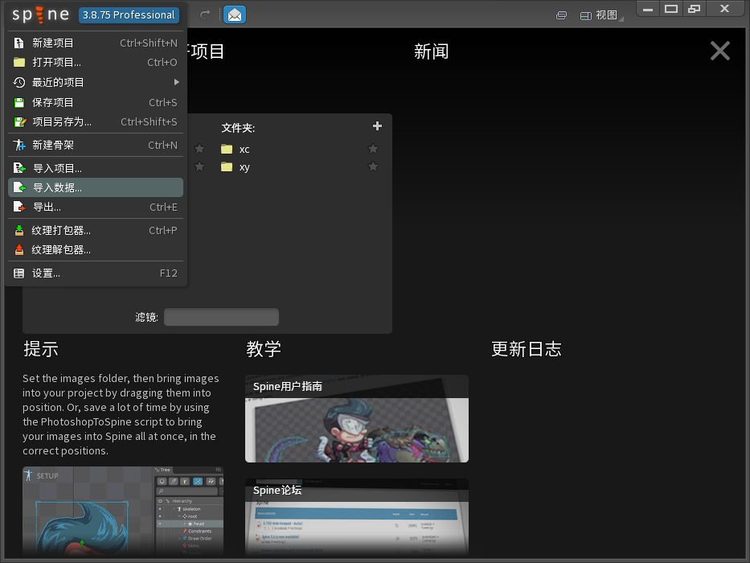
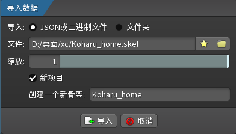
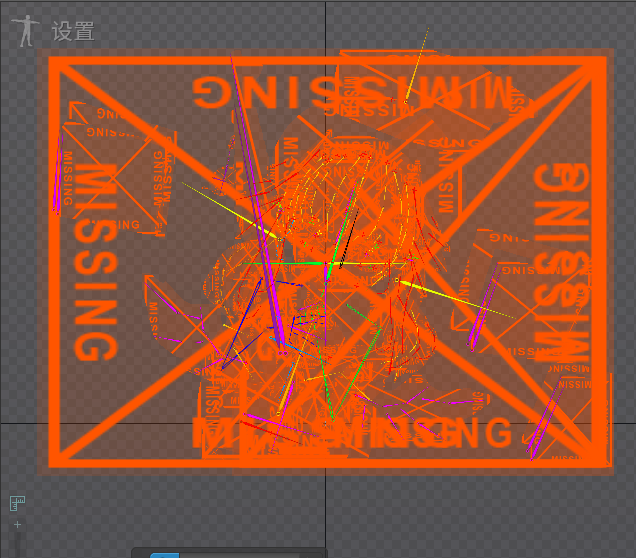
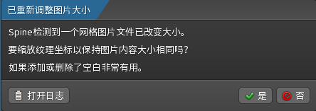

蔚蓝档案live2d集成web [未实现]
众所周知，蔚蓝档案(以下简称ba)是一个十分正面，健康的游戏 对，就是那个9700青辉石一个彩也没有的游戏 其中角色的回忆大厅制作非常精良，且是通过live2d动画(以下简称l2d)实现
众所周知*2，HTML JavaScript CSS三种语言可以在web中实现任何东西 本段运用了夸张的修辞手法
那么我们也许可以把ba的l2d集成到web中，从而实现...... 实现了个啥我也不知道，唯一用处可能是装b
首先，ba的l2d需要解包获取 由于内裤松从2022年12月开始明文规定禁止一切解包行为，所以解包过程不过多赘述 解包后将得到一堆文件夹，找到名为Texture2D的文件夹，搜索spr 将会得到一堆的立绘和其他乱七八糟的东西 找到想提取l2d的角色立绘，复制文件前缀(有可能是像"NP0109"这样的类似编号，也有可能是角色的英文名) 复制后在文件夹中搜索，找到xxxxx_home.png和xxxxx_home2.png两张图片，单独复制到一个文件夹，然后打开TextAsset文件夹，再次搜索编号或角色名，找到xxxxxhome.atlas和xxxxxhome.skel两个文件(两个文件都会有一个.assets后缀，删掉即可)
至此，解包工作完成，接下来打开spine，选择导入数据

然后导入你获取到的xxxxxhome.skel

然后你就会发现导入的skel变成了这样

这个时候不要慌，像上面的导入数据一样点开spine的logo，不过这次选择纹理解包器，选择刚才解包出来的xxxxxhome.atlas，然后在存放l2d文件的文件夹下新建一个文件夹用来存放纹理，输出目录就选择这个文件夹
点击解开，纹理文件夹就会出现一堆图片，spine右边的层级树有一个图片，点击它，在下面的图片文件中设置路径为纹理文件夹并选择打开
重要提示!!!

如果出现上面的提示一定要选否，否则会导致贴图错乱
l2d到这里就解完包了，下一步就是集成到网页 但我找到的教程和此l2d的结构都不一样，所以这个项目暂时先到这里